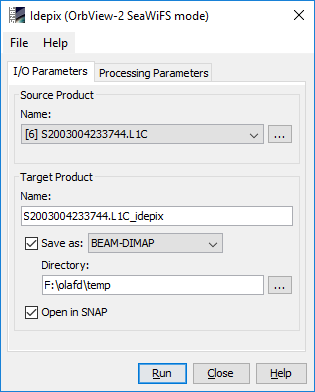

Processor Description
I/O Parameters Tab

Source Product Group
Name:
Used to select the spectral source product. The source product shall
contain spectral bands providing a source spectrum at each pixel. Use the ... button to
open a data product currently not opened in the Sentinel Toolbox.
Supported OrbView-2 SeaWiFS Source Products
The following OrbView-2 SeaWiFS source products are supported for Idepix classification:
-
S*.L1C:
Landsat-8 OLI Level 1 T- Terrain Corrected products (30/15m), for detailed product description and
file naming convention see USGS Landsat Product Handbook, section4
(http://landsat.usgs.gov/l8handbook_section4.php).
Target Product Group
Name:
Used to specify the name of the target product.
Save to:
Used to specify whether the target product should be saved to the file system. The
combo box presents a list of file formats.
Open in SNAP:
Used to specify whether the target product should be opened in the Sentinel Toolbox.
When the target product is not saved, it is opened in the Sentinel Toolbox automatically.
The Processing Parameters
The Processing Result
The Idepix classification result is written into the target product as a flag band named 'pixel_classif_flags'.
This band holds integer values which for OrbView-2 SeaWiFS follow the flag coding shown below.

The target product also provides a corresponding flag mask to visualize the pixel classification through the
SNAP Mask Manager: